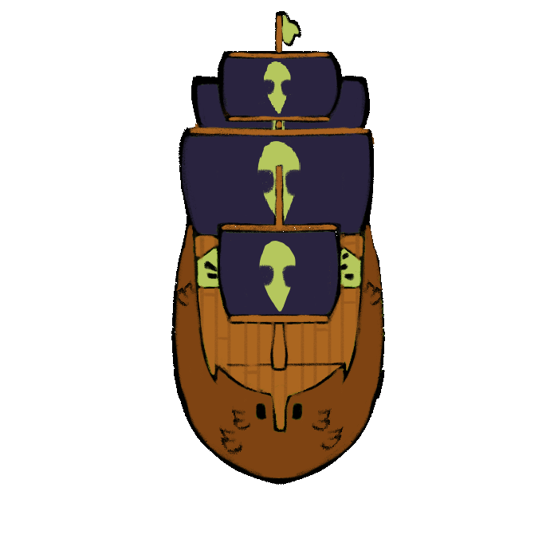
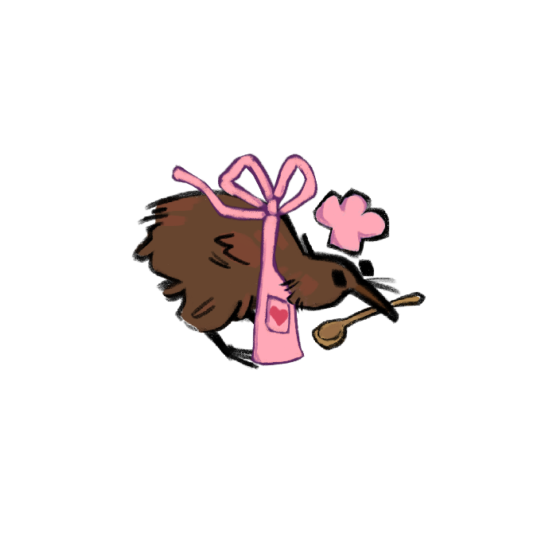
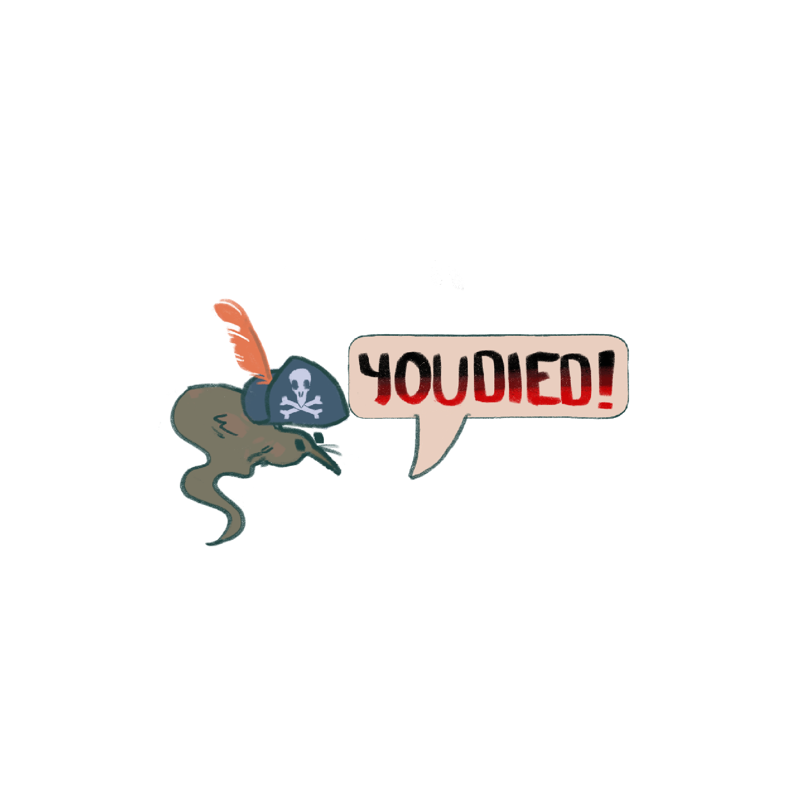
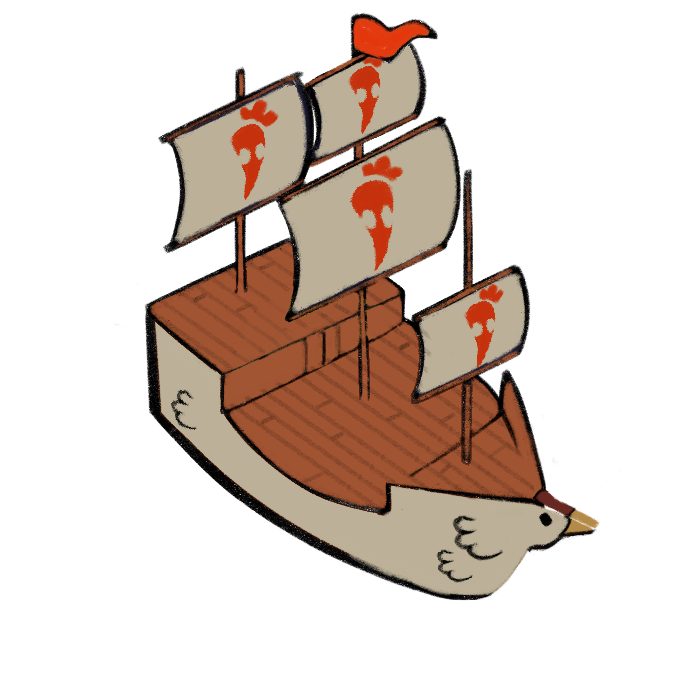
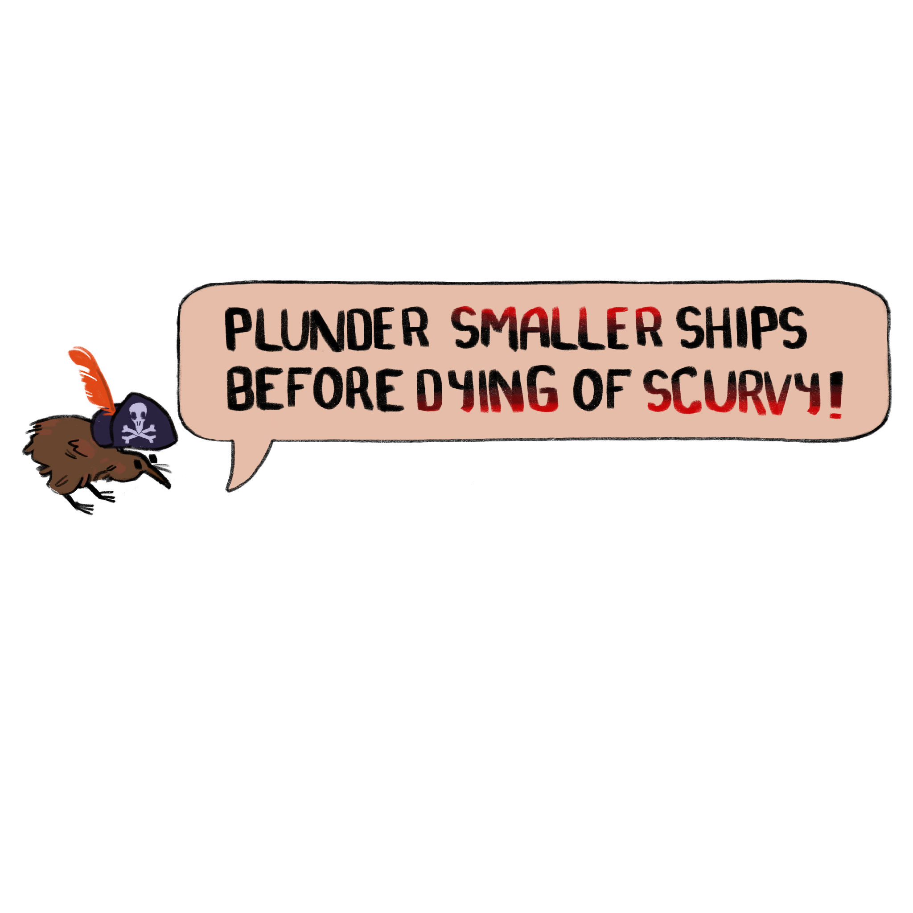
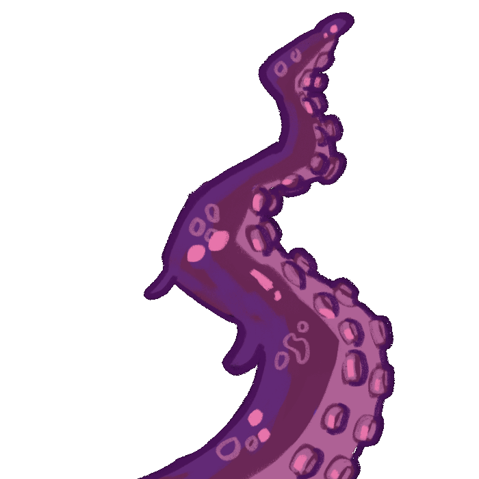

← All projects
Unity C# Visual Studio Procreate GitHub Google Workspace Discord
Case Study
Kiwi Kapitan
Overview: Kiwi Kapitan is a casual action game where players helm a Kiwi Pirate ship, plundering enemy Chicken Ships for kiwi fruit before succumbing to scurvy on the open seas. Originally scoped as a cooking game, the project underwent a full design pivot mid-development, requiring a rapid redesign of core mechanics, scope, and deliverables under a five-week deadline.
Key Features: Casual Action Gameplay · Player Ship Movement & Collision · Scurvy Loss Condition · Original Sprite Art · Full Mid-Development Design Pivot







Contributions
- Pivoted core design direction mid-development, redefining scope and rebuilding the production plan to ship within the remaining timeline.
- Authored game design documents and production schedules, managing task distribution and milestone tracking.
- Prototyped and implemented player movement, collision detection, and loss condition systems.
- Designed levels and created original assets.
Impact
- Recovered a stalled production by re-scoping the game concept and rebuilding the plan mid-cycle, delivering a shippable build within a five-week window.
- Kept a small team aligned through the pivot with clear documentation and milestone tracking.
Quick facts
5-week production · RIT student project
Team
Small student team